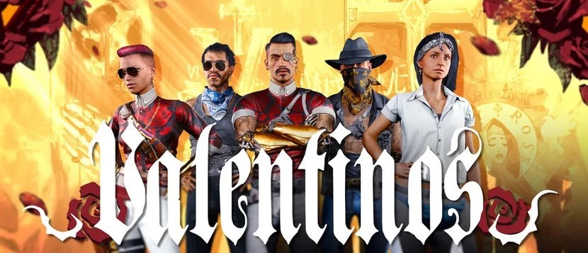

|  | |||||||||
| Anasayfa | Hayvanlar | Kaplan Pençeleri | Valentinolar | Voodoo Oğlanları | Maelstrom | Mox | 6. Cadde | Wraithler | Aldecaldolar |
| Valentinos, yaklaşık 6.000 üye ile Night City'deki en büyük çetelerden biridir. Heywood, The Glen ve Vista Del Rey'de, yerel topluluklarda güçlü bir şekilde kök salmış geniş, fakirleşmiş Latino barriolarında faaliyet gösteriyorlar. Onlar, Night City'nin Chicano kültürünün temsilcileridir ve bu gelenekleri bir yüzyıldan fazla bir süredir geliştirmişlerdir. Valentinos, çete dövmelerini ve altın takılarını dini motiflerle açıkça sergiliyor, Santa Muerte ve Jesus Malverde en popüler ve bilindik olanlar. Ayrıca renkli kıyafetlere, süslü arabalara, gümüş ve altın kaplama silahlara da bayılıyorlar. Ekip tarafından kullanılan siber yazılımlar arasında refleks artırıcılar, otomatik yükleyiciler ve artırılmış siber ekstremler bulunur. Valentino üyelerinin çoğunluğu Meksika mirasına sahiptir, ancak diğer ırklar ve etnik gruplar da katılmaya davetlidir. Üyeler, Chicano kültürünü benimseyerek ve Dia de Los Muertos, Quinceañeras, Samana Santa veya Dia de Nuestra Señora de Guadalupe gibi çeşitli Meksika tatillerini ve geleneklerini kutlayarak hızla entegre olma eğilimindedir. Bu ortak miras duygusu veya en azından paylaşılan gelenekler, büyük bir aile oluşturmak için çeteyi yerel halkla bağlar. Topluluğun sadakati çete üyelerini koruyor, bu da NCPD ve şirketlerin çeteye sızmasını neredeyse imkansız hale getiriyor. Karşılığında Valentino'lar tüm mahalleyi koruyorlar. İşte bu nedenlerden dolayı, birinin çetesine ihanet etmesi bir Valentino'nun işleyebileceği en iğrenç suçtur. Genellikle ve özellikle korkunç bir ölümle cezalandırılır. Öte yandan, diğer çeteler, polisler ya da şirket uygulayıcıları ile savaşırken ölen Valentinos genellikle aziz ve şehit olarak hatırlanır. Bu insanlar için şarkılar yapılıyor ve devasa duvar resimlerinde tasvir ediliyor.
Valentinolar, restoranlar, otomobil mağazaları ve gece kulüpleri gibi birçok meşru işletmeye sahiptir, ancak aynı zamanda braindance stüdyoları, spor bahis salonları ve yerel
inşaat şirketleri de işletmektedirler. Bunlardan herhangi biri suç faaliyeti için bir paravan olarak kullanılabilir: buluşma yerleri, kara para aklama operasyonları veya çalıntı
araçlar için garajlar.
Ana gelir kaynakları silah kaçakçılığı, araba hırsızlığı, uyuşturucu kaçakçılığı, soygun, hırsızlık, vurulan işler (saldırı veya cinayet dahil), fuhuş ve silah ve araçların
yasadışı modifikasyonudur.
|